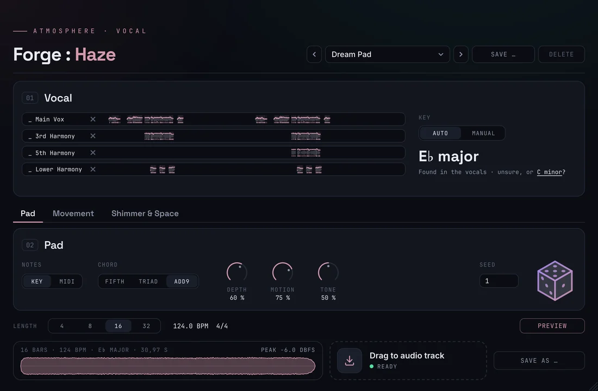
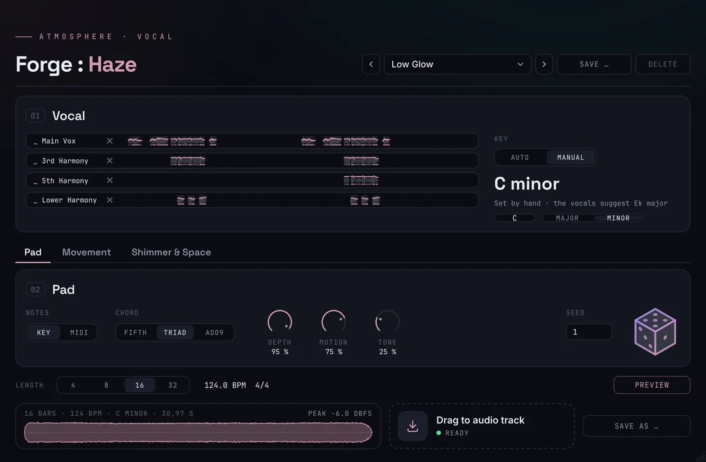
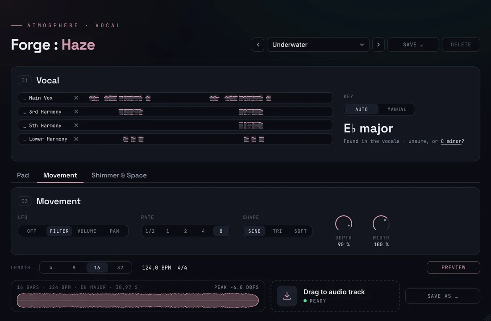
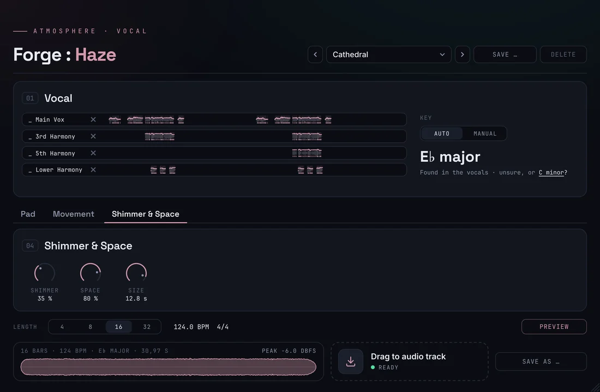

Scot & Millfield Forge · DocumentationForge :
Haze
Your vocal,
turned into air.
Crafted deep in the Ruhr, from coal and steel.

4 vocal takes
4–32 bars
1 key, found for you
10 factory presets
0 library samples
Documentation
How it
works
Atmospheric pads usually come from sample libraries – the same ones everybody uses. Haze makes them from your own vocal: it finds the key of your song and the notes the singer holds, freezes those vowels and stacks them into a soft chord that breathes with your track. Render it as audio or play it from your keyboard. Pick a topic.
01 / Installation
Set up
on Windows
Haze comes as a ZIP: ScotMillfieldForgeHaze_<version>.zip. A .vst3 is a folder. It runs in every DAW on Windows 10 or 11 (64-bit) that loads VST3 instruments. Windows only for now; a macOS version is in the works.
ScotMillfieldForgeHaze.vst3 to C:\Program Files\Common Files\VST3\.Needs administrator approval02 / Vocals
Your voice,
your key
Haze works best with dry, sung vocals: the lead and up to three harmonies of your song, without reverb or delay. It reads them side by side on the time line of the song, traces the pitch of every take and marks the notes the singer holds – the vowels the pad is made from.
Loading
- Drop WAV, AIFF or FLAC files on the page – several at once, for example all vocal stems of the song – or click the free lane to choose files. You can also drag audio events straight out of your DAW.
- Haze holds a lead and up to three harmonies. Drop on a lane to replace it, the × removes a take.
- Takes of up to five minutes, any sample rate, mono or stereo. The project remembers the files and reads them again when it opens.
- Stems from a finished mix work less well; split the vocal off first if you can.
Key
- Auto finds the key in all takes together – one harmony alone often holds too few notes to tell.
- When two keys are close (a major key and its relative minor share the same notes), Haze says “unsure” and offers the other one as a link. One click takes it.
- Manual sets root and major/minor by hand; switching to Manual starts from the key Haze found.
- Presets never change the key: it belongs to your song.
03 / The pad
Frozen vowels,
one chord
For every note of the chord, Haze picks a held vowel that was sung close to it and freezes it: only the soft colour of the voice remains, without words, without a beat. The vowels are tuned onto the chord of your key and stacked into one transparent pad.

Controls
- Chord: Fifth (root and fifth – open, neither major nor minor), Triad, or Add9 (with the ninth – the dreamiest).
- Depth: the root an octave below, for warmth. The more depth, the further the low end opens.
- Motion: from still – one frozen moment – to wandering: the pad crawls through its vowels and fades between several of them for each note.
- Tone: from dark to airy; above the middle a quiet layer an octave higher adds air.
- Seed: the same pad with another grain. The same seed always gives the same file.
Magic Cube
- Click the cube for a new pad: chord, depth, motion, tone, shimmer, room and – on about two out of three rolls – a slow movement. Vocals, key and length stay.
- Every roll has a number (“Magic 48213” in the preset bar); the same number always gives the same pad. Save one you like as your own preset.
04 / Movement
In step
with your song
One LFO that runs in bars of your tempo, so the pad breathes with the track instead of drifting against it. Off by default.

- LFO: Filter opens and closes – down to an “oo” at full depth; Volume breathes; Pan wanders slowly through the stereo field. Filter and volume start closed and open towards the middle of each cycle.
- Rate: one cycle in ½, 1, 2, 4 or 8 bars. Shape: sine, triangle or a soft square for a gentle pump.
- Depth: how far it moves.
- Width: from mono (0 %) to extra wide (150 %). Narrow the pad when it spreads too far in your mix.
05 / Shimmer & Space
Dust above,
room around
A cloud of long, soft grains floats above the frozen chord, and a large, diffuse room carries both – without the metallic ring a plain reverb gets on long tones.

- Shimmer: grains of half a second to a second, taken from the inside of the vowels and bent to the nearest note of the chord, now and then an octave higher. At 100 % the cloud is as loud as the pad.
- Space: how much of the room you hear; the dry pad steps back as the space grows.
- Size: the decay of the room, from 2 to 14 seconds.
06 / Play from MIDI
Every key,
a frozen vowel
Optional: switch Notes in the tab Pad from Key to MIDI and Haze becomes a playable instrument. Hold a chord on your keyboard or play a MIDI track – the pad follows every change.
- Every held key sounds a frozen vowel at exactly its pitch, also notes that were never sung – as long as a vowel lies within an octave. Up to 16 voices, with velocity, a soft attack and a long release.
- Depth adds the octave below your lowest key. Tone, Motion, Seed, Movement, Space and Width work as with the rendered pad; the movement runs in step with your song. The shimmer cloud is part of the rendered pad only.
- When you switch to MIDI, Haze prepares its notes in the background (a moment, also with the window closed). Preview then holds the chord of your key until you press Stop – handy without a keyboard.
- To keep what you played as audio, bounce or render the instrument track in your DAW. Drag tile and “Save as …” belong to the rendered pad and are hidden in MIDI mode.
07 / Export
Onto the track
With Notes on Key, Haze renders the pad in the background after every change. The foot of the window shows the waveform with length, tempo, key and peak.
- Length: 4, 8, 16 or 32 bars at your project tempo and time signature, exact to the sample. The pad fades in softly and out at the end.
- Drag to audio track: drag the tile onto an audio track at the bar where the pad should start.
- Save as … stores the same WAV wherever you like.
- 24-bit stereo WAV at your project’s sample rate, peak at −6 dBFS, named after length, tempo, key and seed, e.g.
Haze_16Bars_120BPM_Eb-major_1.wav. - Preview or any MIDI note plays the rendered pad from its start – what you hear is what you export.
08 / Presets
Ten moods
to start from
The preset bar sits at the top right, as in the other Forge products. A preset holds the sound; your vocals, the key and Notes stay as they are.
Your own presets
- Save … stores the current settings under a name; Delete only works on your own presets. “modified” shows when the sound differs from the loaded preset.
- Location:
Documents\Scot & Millfield Forge\Presets\Hazeas XML. - Every control is also a parameter in your DAW (“Haze …”): automatable, and undoable where the DAW supports it.
09 / Tips
When something
sounds off
“No held notes found”
Haze needs sung, sustained notes. Spoken, rapped or very short phrases give it little to freeze – add a take with longer notes, a chorus or a harmony.
The pad sounds out of key
Check the key on the right. When Haze says “unsure”, try the offered key, or set it with Manual. Effects on the vocal (reverb, delay, doubling) also confuse the pitch – load the dry take.
Too dense in the mix
Take Depth and Space down, use Fifth, or narrow Width. A darker Tone leaves room for the vocal itself.
No sound at all
Without an activated license Haze stays silent and exports nothing. Click License at the top right and activate this computer. In MIDI mode, wait until the notes are prepared.